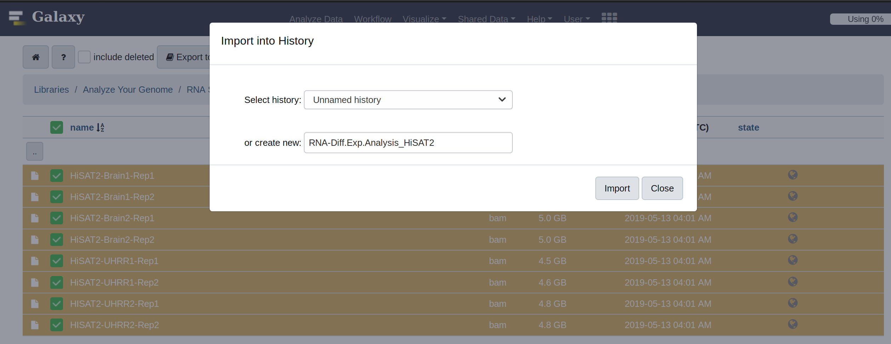
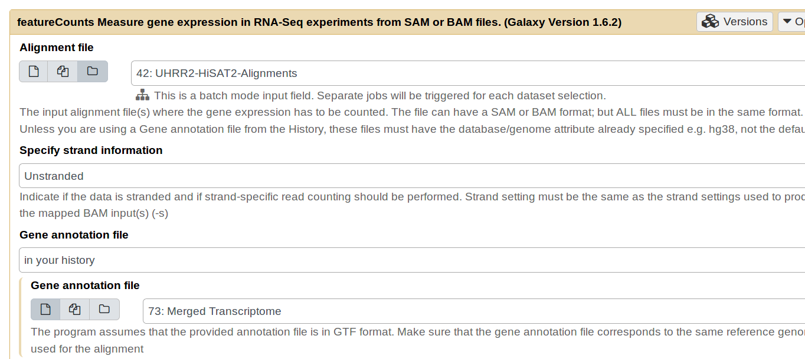

Bioinformatics Tutorials using Galaxy
1.
Making frequent use of the 'History' tab within Galaxy will enable you to accurately manage the workflow of whatever pipeline you are managing. To start off, we will first import the data necessary for this step. To do that, navigate to the following link: https://usegalaxy.org/u/niemasd/h/rna-seq-methods and click 'Import history'. Now let's name the imported history "Diff. RNA Expression w/ HiSAT2".

2.
Given all of these reads, it is a good idea to first organize the data in a way that makes sense to you. For me, that involves rewriting the names of each fastq file to something more meaningful to me. To do this, click on each file name and then click on the pencil symbol to edit their attributes. While not necessary, as the tutorial proceeds we will be making a bunch of files in Galaxy's history and it will be useful to have clearly labeled files. My renamed files appear here.
3.
The first step is to align these reads to the human reference genome. For this example, we will make use of the hg19 reference genome. We will first use HiSAT2 to align the reads. To make use of the tool, use the Search Tools box on the left hand panel to find HiSAT2. Click on HiSAT2 to bring up the options for the tool. Use the built in 'hg19 Canonical' reference genome and select the option for paired end reads. Select the forward and reverse reads for each file and replicate through this option. Next, click on Advanced Options, and 'Specify spliced alignment options.' Under the section of Transcriptome assembly reporting choose to "Report alignments tailored for transcript assemblers including StringTie." Then click 'execute'. Run this same step for each pair of paired-end reads.
4.
We are now going to organize the HiSAT2 results. The best way to do that in Galaxy is to make use of their own data structures. Specifically, a 'Dataset List.' The way to construct this is to navigate to the history, and clicking on the gray button with a checkbox near the top of the history. Then click on each of the two replicates from each sample and click on 'For all selected...' and then click on 'Build Dataset List.' Do this for each of the samples (UHRR1, UHRR2, BRAIN1, and BRAIN2).
5.
The next step is to run StringTie to quantify the transcript levels after the mapped HiSAT2 results. To do this, navigate to the tool panel on the left and search "StringTie". Click on the first result and then change the 'Input mapped reads' to the Dataset collection option. Select whichever HiSAT2 alignments you would like to run and click execute without changing any other options.
6.
When each of the StringTie jobs have finished running, the next step is to create a unified transcriptome assembly. This is because each of the previous runs was conducted without a reference transcriptome. To do this, we will make use of StringTie merge; however, we first need to group each of the StringTie results together. To do this navigate to the tool panel and search for 'Merge Collections.' Click on the tool and add each of the StringTie results to merge into a single collection list of datasets.
7.
We now need to retreive a copy of the genome annotation file for the hg19 genome assembly. This will be used by StringTie merge as a reference annotation file to quantify the number of transcripts. To do this, navigate to http://genome.ucsc.edu/cgi-bin/hgTables?command=start and choose the hg19 assembly. Send the output to Galaxy.

8.
We are finally ready to run StringTie merge. To do this, navigate to the lefthand tools panel and search for StringTie merge. Click on the tool, and select the output of Step 6 in the Transcripts input. Select the outputted UCSC GTF file as the Reference annotation. Hit execute with the rest of the options untouched. Rename the output as Merged Transcriptome.
9.
To quantify the number of transcripts in each sample, we will make use of 'Feature Counts', another tool available in Galaxy. Select as the alignment file, a collection of the HiSAT2 alignments. The Gene Annotation File should be the Merged Transcriptome (output of StringTie merge). Additionally, click on 'Options for paired-end reads.' For the option of 'Count fragments instead of reads,' change the value to 'Enabled, fragments (or templates) will be counted.' Execute this command. You will need to do this for each of the 4 alignment collections.

10.
The final step is to run DEseq2 to quantify the differential expression between the UHRR data and the Brain data. To do this, select the DEseq2 tool and input 4 factor levels. For each factor level label it from the set of samples (UHRR1, UHRR2, Brain1, and Brain2) and for each designate the appropriate featureCounts file. Label the resultant files with the HiSAT2/StringTie pipeline used to generate them.

11.
Now download and inspect the results from the plot file. Spend some time thinking about the heatmap on the 2nd page, then proceed to Step 12.

12.
What do the colors of the various boxes represent? Why is the diagonal always 0? What can be said about the 'distance' between the UHRR samples (Universal Human RNA) and the Brain samples? Why is the distance less replicates? What can be concluded about the mRNA content of brain tissue versus other human tissue? What are future experiments that can be done? What would you focus on next?